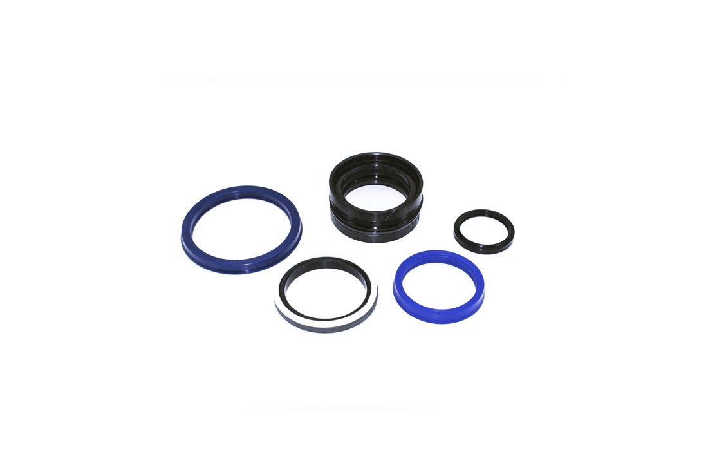

유공압씰Hydraulic & Pneumatic Seal
로드씰·피스톤씰·와이퍼·버퍼링 등 유압 실린더용 씰과, 저마찰·경량 설계의 공압 실린더용 씰을 함께 공급합니다. 폴리우레탄·NBR·PTFE 등 소재로 다양한 압력·속도 조건에 대응합니다.Rod seals, piston seals, wipers and buffer rings for hydraulic cylinders, together with low-friction, lightweight seals for pneumatic cylinders. Polyurethane, NBR and PTFE materials cover a wide range of pressure and speed conditions.

작동 원리 & 구조Principle & Structure
씰은 조립 시 그루브에 예압(preload) 상태로 장착되어 무압력 상태에서도 1차 밀봉력을 갖습니다. 시스템 압력이 걸리면 유체가 씰 배면을 밀어 접촉면 압력이 함께 높아지는 자기 보강(self-energizing) 방식으로 작동해, 압력이 커질수록 밀봉력도 함께 커집니다. 로드씰은 로드를 따라 오일이 새는 것을, 피스톤씰은 피스톤과 실린더 보어 사이를, 와이퍼는 로드 표면의 이물질 유입을, 버퍼씰은 급격한 압력 피크를 각각 담당합니다.Seals are installed with a preload in the groove so they provide baseline sealing even before system pressure is applied. Once pressure builds, it pushes against the back of the seal and increases contact pressure in proportion — a self-energizing action, so sealing force scales with system pressure. Within a cylinder, the rod seal stops oil escaping along the rod, the piston seal blocks flow between piston and bore, the wiper keeps contaminants from riding in on the rod surface, and the buffer seal absorbs pressure spikes ahead of the rod seal.
주요 특징Key Features
- 압력에 비례해 밀봉력이 커지는 자기 보강 구조Self-energizing design — sealing force increases with pressure
- 폴리우레탄(내마모)·PTFE(저마찰)·NBR(범용) 등 용도별 소재 선택Material choice by duty: polyurethane for wear resistance, PTFE for low friction, NBR for general purpose
- 로드씰·피스톤씰·와이퍼·버퍼씰·가이드링까지 실린더 풀세트 구성Full cylinder seal set — rod seal, piston seal, wiper, buffer seal, guide ring
- 공압용은 저마찰·저압(최대 16bar급) 설계로 경량·고속 대응Pneumatic-specific designs use low-friction, low-pressure profiles (up to roughly 16 bar) for light, high-speed operation
적용 분야Applications
유압씰Hydraulic Seals
유압 실린더용 로드씰·피스톤씰·스태틱씰 등을 KASTAS(튀르키예)·SKF(스웨덴) 두 브랜드로 공급합니다. 아래 항목을 클릭하면 품번별 재질·압력·온도·속도 사양을 확인할 수 있습니다.Rod seals, piston seals and static seals for hydraulic cylinders, supplied under both the KASTAS (Turkey) and SKF (Sweden) brands. Click any category below to see material, pressure, temperature and speed specs by part number.
로드씰Rod Seals KASTAS
실린더 로드(축) 외경을 따라 오일이 누출되지 않도록 막는 1차 밀봉 부품입니다.The primary seal that prevents oil from leaking along the cylinder rod (shaft) surface.
품번 보기 →View part numbers →피스톤씰Piston Seals KASTAS
피스톤과 실린더 보어 사이를 밀봉해 양쪽 챔버의 압력을 분리합니다.Seals the gap between piston and cylinder bore, separating pressure between the two chambers.
품번 보기 →View part numbers →로드·피스톤 겸용Piston-Rod Seals KASTAS
피스톤씰과 로드씰 기능을 하나의 프로파일로 겸하는 콤팩트 설계입니다.A compact profile that combines piston-seal and rod-seal function in a single part.
품번 보기 →View part numbers →로드씰Rod Seals SKF
실린더 로드(축) 외경을 따라 오일이 누출되지 않도록 막는 1차 밀봉 부품입니다.The primary seal that prevents oil from leaking along the cylinder rod (shaft) surface.
품번 보기 →View part numbers →피스톤씰Piston Seals SKF
피스톤과 실린더 보어 사이를 밀봉해 양쪽 챔버의 압력을 분리합니다. 로드·피스톤 겸용 프로파일도 포함합니다.Seals the gap between piston and cylinder bore. Includes combined piston-rod profiles.
품번 보기 →View part numbers →스태틱 씰Static Seals KASTAS
고정부(포트·커넥터 등)에 사용하는 정적 밀봉·백업링입니다.Static seals and back-up rings used at fixed connections such as ports and fittings.
품번 보기 →View part numbers →특수 씰Special Sealing Elements KASTAS
PTFE 복합소재 로드·피스톤씰, V-링, 쉐브론씰 등 특수 조건용 씰입니다.PTFE-composite rod/piston seals, V-rings, chevron seals and other seals for special duty conditions.
품번 보기 →View part numbers →유압씰 · 로드씰Hydraulic Seals · Rod Seals
로드씰Rod Seals KASTAS
실린더 로드(축) 외경을 따라 오일이 누출되지 않도록 막는 1차 밀봉 부품입니다.The primary seal that prevents oil from leaking along the cylinder rod (shaft) surface.
| 품번Part No. | 제품명Product | 적용부위Application | 재질Material | 압력(bar)Pressure (bar) | 온도(℃)Temp. (℃) | 속도(m/s)Speed (m/s) |
|---|---|---|---|---|---|---|
| FR200 | 저마찰 로드씰Low Friction Rod Seal | 로드Rod | PU | ≤400 | -35 / +100 | 0.5 |
| XT200 | 내압출 로드씰Extrusion Resistant Rod Seal | 로드Rod | PU | ≤400 | -35 / +125 | 0.5 |
| K01 | 로드 패킹Rod Packing | 로드Rod | NBR | ≤400 | -30 / +105 | 0.5 |
| K22 | 로드씰Rod Seal | 로드Rod | NBR | ≤150 | -30 / +105 | 0.5 |
| K29 | 버퍼씰Buffer Seal | 로드Rod | PU | ≤400 | -30 / +100 | 0.5 |
| K31 | 고하중 로드씰Heavy Duty Rod Seal | 로드Rod | NBR | ≤630 | -30 / +100 | 0.5 |
| K32 | 로드씰Rod Seal | 로드Rod | PU | ≤400 | -30 / +100 | 0.5 |
| K33 | 로드씰Rod Seal | 로드Rod | PU | ≤400 | -30 / +100 | 0.5 |
| K34 | 로드씰Rod Seal | 로드Rod | NBR | ≤700 | -30 / +105 | 0.5 |
| K35 | 로드씰Rod Seal | 로드Rod | NBR | ≤400 | -30 / +105 | 5.0 |
| K37 | 로드씰Rod Seal | 로드Rod | NBR | ≤400 | -30 / +105 | 0.5 |
| K38 | 로드씰Rod Seal | 로드Rod | PU | ≤400 | -30 / +100 | 0.5 |
| K97 | 로드씰Rod Seal | 로드Rod | HNBR | ≤250 | -30 / +150 | 0.5 |
| K39 | 로드씰Rod Seal | 로드Rod | PU | ≤250 | -30 / +100 | 0.5 |
유압씰 · 피스톤씰Hydraulic Seals · Piston Seals
피스톤씰Piston Seals KASTAS
피스톤과 실린더 보어 사이를 밀봉해 양쪽 챔버의 압력을 분리합니다.Seals the gap between piston and cylinder bore, separating pressure between the two chambers.
| 품번Part No. | 제품명Product | 적용부위Application | 재질Material | 압력(bar)Pressure (bar) | 온도(℃)Temp. (℃) | 속도(m/s)Speed (m/s) |
|---|---|---|---|---|---|---|
| XT300 | 피스톤씰Piston Seal | 피스톤Piston | PU | ≤400 | -35 / +125 | 0.5 |
| K03 | 피스톤 패킹Piston Packing | 피스톤Piston | NBR | ≤400 | -30 / +105 | 0.5 |
| K15 | 피스톤씰Piston Seal | 피스톤Piston | NBR | ≤250 | -30 / +100 | 0.5 |
| K16 | 콤팩트 피스톤씰Compact Piston Seal | 피스톤Piston | NBR | ≤400 | -30 / +105 | 0.5 |
| K17 | 피스톤씰Piston Seal | 피스톤Piston | NBR | ≤400 | -30 / +105 | 5.0 |
| K19 | 고하중 피스톤씰Heavy Duty Piston Seal | 피스톤Piston | NBR | ≤400 | -30 / +105 | 1.50 |
| K23 | 피스톤씰Piston Seal | 피스톤Piston | NBR | ≤150 | -30 / +105 | 0.5 |
| K26 | 피스톤씰Piston Seal | 피스톤Piston | NBR | ≤60 | -30 / +105 | 0.5 |
| K49 | 피스톤씰Piston Seal | 피스톤Piston | PU·NBR | ≤400 | -30 / +100 | 0.5 |
| K41 | 피스톤씰Piston Seal | 피스톤Piston | NBR | ≤400 | -30 / +105 | 5.0 |
| K42 | 콤팩트 피스톤씰Compact Piston Seal | 피스톤Piston | NBR | ≤700 | -30 / +105 | 0.5 |
| K48 | 콤팩트 피스톤씰Compact Piston Seal | 피스톤Piston | NBR·TPE·POM | ≤700 | -30 / +100 | 0.3 |
| K501 | 피스톤씰Piston Seal | 피스톤Piston | PA·NBR | ≤500 | -30 / +105 | 1.0 |
| K502 | 콤팩트 피스톤씰Compact Piston Seal | 피스톤Piston | NBR·FABRIC·POM | ≤500 | -30 / +100 | 0.5 |
| K503 | 콤팩트 피스톤씰Compact Piston Seal | 피스톤Piston | NBR·TPE·POM | ≤500 | -30 / +100 | 0.5 |
| K504 | 콤팩트 피스톤씰Compact Piston Seal | 피스톤Piston | NBR·FABRIC·POM | ≤400 | -30 / +100 | 0.5 |
| K505 | 콤팩트 피스톤씰Compact Piston Seal | 피스톤Piston | NBR·FABRIC·POM | ≤500 | -30 / +100 | 0.5 |
| K518 | 콤팩트 피스톤씰Compact Piston Seal | 피스톤Piston | NBR·TPE·POM | ≤400 | -30 / +100 | 0.5 |
| K518X | 고압 콤팩트 피스톤씰HP Compact Piston Seal | 피스톤Piston | NBR·TPE·PA | ≤400 | -30 / +100 | 0.5 |
| K753 | 피스톤씰Piston Seal | 피스톤Piston | PTFE·NBR | ≤400 | -30 / +105 | 2.0 |
| K757 | 피스톤씰Piston Seal | 피스톤Piston | PTFE·NBR | ≤400 | -30 / +105 | 2.0 |
| K515 | 피스톤씰Piston Seal | 피스톤Piston | PU·NBR | ≤400 | -30 / +100 | 0.5 |
유압씰 · 로드·피스톤 겸용Hydraulic Seals · Piston-Rod Seals
로드·피스톤 겸용Piston-Rod Seals KASTAS
피스톤씰과 로드씰 기능을 하나의 프로파일로 겸하는 콤팩트 설계입니다.A compact profile that combines piston-seal and rod-seal function in a single part.
| 품번Part No. | 제품명Product | 적용부위Application | 재질Material | 압력(bar)Pressure (bar) | 온도(℃)Temp. (℃) | 속도(m/s)Speed (m/s) |
|---|---|---|---|---|---|---|
| K21 | 로드·피스톤씰Piston-Rod Seal | 로드·피스톤Piston Rod | NBR | ≤150 | -30 / +105 | 0.5 |
| K98 | 로드·피스톤씰Piston-Rod Seal | 로드·피스톤Piston Rod | PU·NBR | ≤400 | -30 / +100 | 0.5 |
| K114 | 로드·피스톤씰Piston-Rod Seal | 로드·피스톤Piston Rod | PU·NBR | ≤400 | -30 / +105 | 0.5 |
| K920 | 로드·피스톤씰Piston-Rod Seal | 로드·피스톤Piston Rod | PU·NBR | ≤350 | -30 / +100 | 0.5 |
| K921 | 로드·피스톤씰Piston-Rod Seal | 로드·피스톤Piston Rod | PU·NBR | ≤350 | -30 / +100 | 0.5 |
| K922 | 로드·피스톤씰Piston-Rod Seal | 로드·피스톤Piston Rod | PU·NBR | ≤350 | -30 / +100 | 0.5 |
유압씰 · 로드씰Hydraulic Seals · Rod Seals
로드씰Rod Seals SKF
실린더 로드(축) 외경을 따라 오일이 누출되지 않도록 막는 1차 밀봉 부품입니다.The primary seal that prevents oil from leaking along the cylinder rod (shaft) surface.
| 품번Part No. | 제품명Product | 적용부위Application | 재질Material | 압력(bar)Pressure (bar) | 온도(℃)Temp. (℃) | 속도(m/s)Speed (m/s) |
|---|---|---|---|---|---|---|
| S1S | 로드씰Rod Seal | 로드Rod | PU | ≤400 | -30 / +110 | 0.5 |
| ZBR | 버퍼 로드씰Buffer Rod Seal | 로드Rod | PU | ≤400 | -30 / +110 | 0.5 |
| DZR | 양방향 로드씰Double-acting Rod Seal | 로드Rod | PU | ≤400 | -30 / +110 | 0.5 |
| RBB | 로드 버퍼씰Rod Buffer Seal | 로드Rod | PU | ≤400 | -30 / +110 | 0.5 |
| S9B | 로드씰Rod Seal | 로드Rod | NBR | ≤400 | -30 / +110 | 0.5 |
| RSB | 로드씰Rod Seal | 로드Rod | PU | ≤400 | -30 / +110 | 0.5 |
유압씰 · 피스톤씰Hydraulic Seals · Piston Seals
피스톤씰Piston Seals SKF
피스톤과 실린더 보어 사이를 밀봉해 양쪽 챔버의 압력을 분리합니다. 로드·피스톤 겸용 프로파일도 포함합니다.Seals the gap between piston and cylinder bore. Includes combined piston-rod profiles.
| 품번Part No. | 제품명Product | 적용부위Application | 재질Material | 압력(bar)Pressure (bar) | 온도(℃)Temp. (℃) | 속도(m/s)Speed (m/s) |
|---|---|---|---|---|---|---|
| MPV | 피스톤씰Piston Seal | 피스톤Piston | PU | ≤400 | -30 / +110 | 0.5 |
| CPV | 피스톤씰Piston Seal | 피스톤Piston | PU | ≤400 | -30 / +110 | 0.5 |
| GH | 피스톤씰Piston Seal | 피스톤Piston | PTFE | ≤400 | -30 / +110 | 2.0 |
| APR | 피스톤씰Piston Seal | 피스톤Piston | PTFE | ≤400 | -30 / +110 | 2.0 |
| LCP | 피스톤씰Piston Seal | 피스톤Piston | PTFE | ≤400 | -30 / +110 | 2.0 |
| LTP | 피스톤씰Piston Seal | 피스톤Piston | NBR | ≤400 | -30 / +110 | 0.5 |
| CUT | 피스톤씰Piston Seal | 피스톤Piston | PU | ≤400 | -30 / +110 | 0.5 |
| UNP | 피스톤씰Piston Seal | 피스톤Piston | PU | ≤400 | -30 / +110 | 0.5 |
| PTB | 로드·피스톤씰Piston-Rod Seal | 로드·피스톤Piston Rod | PTFE | ≤400 | -30 / +110 | 2.0 |
| STD | 로드·피스톤씰Piston-Rod Seal | 로드·피스톤Piston Rod | PU | ≤400 | -30 / +110 | 0.5 |
| DZ | 로드·피스톤씰Piston-Rod Seal | 로드·피스톤Piston Rod | PU | ≤400 | -30 / +110 | 0.5 |
유압씰 · 스태틱 씰Hydraulic Seals · Static Seals
스태틱 씰Static Seals KASTAS
고정부(포트·커넥터 등)에 사용하는 정적 밀봉·백업링입니다.Static seals and back-up rings used at fixed connections such as ports and fittings.
| 품번Part No. | 제품명Product | 적용부위Application | 재질Material | 압력(bar)Pressure (bar) | 온도(℃)Temp. (℃) | 속도(m/s)Speed (m/s) |
|---|---|---|---|---|---|---|
| K800 | 백업링Back-up Ring | 로드Rod | X-Tone | ≤600 | -30 / +120 | 1.0 |
| K81 | 백업링Back-up Ring | 로드·피스톤Piston Rod | TPE | ≤300 | -40 / +100 | 1.0 |
| K82 | 스태틱씰Static Seal | —— | PU | ≤600 | -35 / +110 | — |
| K83 | 스태틱씰Static Seal | —— | PU | ≤600 | -35 / +110 | — |
| K84 | 스태틱씰Static Seal | —— | PU | ≤600 | -35 / +110 | — |
| K85 | 스태틱씰Static Seal | —— | PU | ≤500 | -35 / +110 | — |
| K86 | 스태틱씰Static Seal | —— | PU | ≤500 | -40 / +100 | — |
| KO | 오링O-Ring | 로드·피스톤Piston Rod | NBR | ≤63 | -30 / +105 | 0.5 |
| K87 | 유체 커넥터 씰Fluid Connector Seal | —— | NBR | ≤400 | -30 / +105 | — |
| K88 | 유체 커넥터 씰Fluid Connector Seal | —— | NBR | ≤400 | -30 / +105 | — |
| K89 | 스태틱씰Static Seal | —— | PU | ≤600 | -35 / +110 | — |
유압씰 · 특수 씰Hydraulic Seals · Special Sealing Elements
특수 씰Special Sealing Elements KASTAS
PTFE 복합소재 로드·피스톤씰, V-링, 쉐브론씰 등 특수 조건용 씰입니다.PTFE-composite rod/piston seals, V-rings, chevron seals and other seals for special duty conditions.
| 품번Part No. | 제품명Product | 적용부위Application | 재질Material | 압력(bar)Pressure (bar) | 온도(℃)Temp. (℃) | 속도(m/s)Speed (m/s) |
|---|---|---|---|---|---|---|
| K702 | 로드씰Rod Seal | 로드Rod | PTFE·NBR | ≤300 | -30 / +105 | 5.0 |
| K752 | 피스톤씰Piston Seal | 피스톤Piston | PTFE·NBR | ≤300 | -30 / +105 | 5.0 |
| K14 | V링V-Ring | —— | NBR | ≤0.3 | -30 / +105 | 12.0 |
| K150 | 쉐브론 링Chevron Ring | 로드Rod | Fabric NBR | ≤250 | -30 / +80 | 2.0 |
| K151 | 고압 쉐브론씰HP Chevron Seal | 로드Rod | Fabric NBR·POM·PTFE | ≤400 | -30 / +80 | 2.0 |
| K152 | 저압 쉐브론씰LP Chevron Seal | 로드Rod | Fabric NBR·POM | ≤80 | -30 / +80 | 2.0 |
| K154 | 저압 쉐브론씰LP Chevron Seal | 로드Rod | NBR·Fabric NBR | ≤80 | -30 / +80 | 2.0 |
| K155 | 고압 쉐브론씰HP Chevron Seal | 로드Rod | POM·Fabric NBR·PA | ≤400 | -30 / +80 | 2.0 |
공압씰Pneumatic Seals
공압 실린더·자동화 기기에 쓰이는 저마찰·저압 설계의 로드씰·피스톤씰을 KASTAS 브랜드로 공급합니다. 아래 항목을 클릭하면 품번별 사양을 확인할 수 있습니다.Low-friction, low-pressure rod and piston seals for pneumatic cylinders and automation equipment, supplied under the KASTAS brand. Click a category below to see specs by part number.
로드씰Rod Seals KASTAS
공압 실린더 로드용 저마찰 씰입니다.Low-friction rod seals for pneumatic cylinders.
품번 보기 →View part numbers →피스톤씰Piston Seals KASTAS
공압 실린더 피스톤용 저마찰 씰입니다.Low-friction piston seals for pneumatic cylinders.
품번 보기 →View part numbers →공압씰 · 로드씰Pneumatic Seals · Rod Seals
로드씰Rod Seals KASTAS
공압 실린더 로드용 저마찰 씰입니다.Low-friction rod seals for pneumatic cylinders.
| 품번Part No. | 제품명Product | 적용부위Application | 재질Material | 압력(bar)Pressure (bar) | 온도(℃)Temp. (℃) | 속도(m/s)Speed (m/s) |
|---|---|---|---|---|---|---|
| K64 | 공압 로드씰Pneumatic Rod Seal | 로드Rod | PU | ≤16 | -30 / +100 | 1.0 |
| K51 | 공압 로드씰Pneumatic Rod Seal | 로드Rod | PU | ≤16 | -30 / +80 | 1.0 |
| K106 | 공압 로드씰Pneumatic Rod Seal | 로드Rod | NBR | ≤12 | -30 / +105 | 1.0 |
| K130 | 공압 로드씰Pneumatic Rod Seal | 로드Rod | NBR | ≤12 | -30 / +105 | 1.0 |
| K30 | 공압 로드씰Pneumatic Rod Seal | 로드Rod | NBR | ≤16 | -30 / +105 | 1.0 |
| K52 | 공압 로드씰Pneumatic Rod Seal | 로드Rod | NBR | ≤12 | -30 / +105 | 1.0 |
| K53 | 공압 로드씰Pneumatic Rod Seal | 로드Rod | NBR | ≤12 | -30 / +105 | 1.0 |
| K56 | 공압 로드씰Pneumatic Rod Seal | 로드Rod | NBR | ≤16 | -30 / +105 | 1.0 |
| K67 | 공압 로드씰Pneumatic Rod Seal | 로드Rod | NBR | ≤10 | -30 / +105 | 1.0 |
| K109 | 공압 로드씰Pneumatic Rod Seal | 로드Rod | NBR | ≤16 | -30 / +105 | 1.0 |
| K131 | 공압 로드씰Pneumatic Rod Seal | 로드Rod | NBR | ≤16 | -30 / +105 | 1.0 |
| K715 | 공압 로드씰Pneumatic Rod Seal | 로드Rod | PTFE·NBR | ≤16 | -30 / +105 | 4.0 |
공압씰 · 피스톤씰Pneumatic Seals · Piston Seals
피스톤씰Piston Seals KASTAS
공압 실린더 피스톤용 저마찰 씰입니다.Low-friction piston seals for pneumatic cylinders.
| 품번Part No. | 제품명Product | 적용부위Application | 재질Material | 압력(bar)Pressure (bar) | 온도(℃)Temp. (℃) | 속도(m/s)Speed (m/s) |
|---|---|---|---|---|---|---|
| K59 | 공압 피스톤씰Pneumatic Piston Seal | 피스톤Piston | NBR | ≤12 | -30 / +105 | 1.0 |
| K50 | 공압 피스톤씰Pneumatic Piston Seal | 피스톤Piston | NBR | ≤12 | -30 / +105 | 1.0 |
| K162 | 공압 피스톤씰Pneumatic Piston Seal | 피스톤Piston | PU | ≤16 | -30 / +100 | 1.0 |
| K25 | 공압 피스톤씰Pneumatic Piston Seal | 피스톤Piston | NBR | ≤16 | -30 / +105 | 1.0 |
| K54 | 공압 피스톤씰Pneumatic Piston Seal | 피스톤Piston | NBR | ≤12 | -30 / +105 | 1.0 |
| K55 | 공압 피스톤씰Pneumatic Piston Seal | 피스톤Piston | NBR | ≤12 | -30 / +105 | 1.0 |
| K57 | 공압 피스톤씰Pneumatic Piston Seal | 피스톤Piston | NBR | ≤12 | -30 / +105 | 1.0 |
| K58 | 공압 피스톤씰Pneumatic Piston Seal | 피스톤Piston | PU | ≤12 | -30 / +80 | 1.0 |
| K61 | 공압 피스톤씰Pneumatic Piston Seal | 피스톤Piston | NBR·POM·ALU | ≤12 | -30 / +100 | 1.0 |
| K62 | 공압 피스톤씰Pneumatic Piston Seal | 피스톤Piston | NBR | ≤12 | -30 / +105 | 1.0 |
| K63 | 공압 피스톤씰Pneumatic Piston Seal | 피스톤Piston | NBR | ≤12 | -30 / +105 | 1.0 |
| K65 | 공압 피스톤씰Pneumatic Piston Seal | 피스톤Piston | NBR | ≤12 | -30 / +105 | 1.0 |
| K66 | 공압 피스톤씰Pneumatic Piston Seal | 피스톤Piston | NBR | ≤12 | -30 / +105 | 1.0 |
| K160 | 공압 피스톤씰Pneumatic Piston Seal | 피스톤Piston | PU | ≤16 | -30 / +100 | 1.0 |
| K161 | 공압 피스톤씰Pneumatic Piston Seal | 피스톤Piston | PU | ≤16 | -30 / +100 | 1.0 |
| K506 | 공압 피스톤씰Pneumatic Piston Seal | 피스톤Piston | NBR | ≤12 | -30 / +105 | 1.0 |
| K761 | 공압 피스톤씰Pneumatic Piston Seal | 피스톤Piston | PTFE·NBR | ≤16 | -30 / +105 | 4.0 |
와이퍼Wipers
로드 표면의 이물질·수분이 실린더 내부로 유입되는 것을 차단하는 와이퍼입니다. KASTAS(튀르키예)·SKF(스웨덴) 두 브랜드로 공급합니다. 아래 항목을 클릭하면 품번별 재질·온도·속도 사양을 확인할 수 있습니다.Wipers that keep dirt and moisture on the rod surface from being drawn into the cylinder, supplied under both the KASTAS (Turkey) and SKF (Sweden) brands. Click a category below to see material, temperature and speed specs by part number.
와이퍼Wipers KASTAS
로드 표면의 이물질·수분이 실린더 내부로 유입되는 것을 차단합니다.Keeps dirt and moisture on the rod surface from being drawn into the cylinder.
품번 보기 →View part numbers →와이퍼Wipers SKF
로드 표면의 이물질·수분이 실린더 내부로 유입되는 것을 차단합니다.Keeps dirt and moisture on the rod surface from being drawn into the cylinder.
품번 보기 →View part numbers →와이퍼 · 와이퍼Wipers · Wipers
와이퍼Wipers KASTAS
로드 표면의 이물질·수분이 실린더 내부로 유입되는 것을 차단합니다.Keeps dirt and moisture on the rod surface from being drawn into the cylinder.
| 품번Part No. | 제품명Product | 적용부위Application | 재질Material | 압력(bar)Pressure (bar) | 온도(℃)Temp. (℃) | 속도(m/s)Speed (m/s) |
|---|---|---|---|---|---|---|
| K05 | 와이퍼Wiper | 로드Rod | PU | — | -30 / +100 | 1.0 |
| K06 | 와이퍼Wiper | 로드Rod | NBR | — | -30 / +105 | 1.0 |
| K060 | 와이퍼Wiper | 로드Rod | NBR | — | -30 / +105 | 1.0 |
| K07 | 메탈 케이스 와이퍼Metal Case Wiper | 로드Rod | NBR | — | -30 / +105 | 1.0 |
| K09 | 와이퍼Wiper | 로드Rod | NBR | — | -30 / +105 | 1.0 |
| K10 | 더블 와이퍼Double Wiper | 로드Rod | NBR | — | -30 / +105 | 1.0 |
| K11 | 와이퍼Wiper | 로드Rod | TPE | — | -40 / +120 | 2.0 |
| K12 | 메탈 케이스 와이퍼Metal Case Wiper | 로드Rod | PU | — | -30 / +100 | 1.0 |
| K13 | 메탈 케이스 와이퍼Metal Case Wiper | 로드Rod | PU·STEEL | — | -30 / +100 | 1.0 |
| K27 | 더블 와이퍼Double Wiper | 로드Rod | NBR | — | -30 / +105 | 1.0 |
| K94 | 와이퍼Wiper | 로드Rod | PU | — | -35 / +100 | 1.0 |
| K103 | 더블 와이퍼Double Wiper | 로드Rod | PU·NBR | — | -40 / +100 | 1.0 |
| K107 | 와이퍼Wiper | 로드Rod | PU | — | -40 / +100 | 1.0 |
| K703 | 와이퍼Wiper | 로드Rod | NBR | — | -30 / +105 | 5.0 |
| K716 | 와이퍼Wiper | 로드Rod | PU | — | -30 / +105 | 5.0 |
| K92 | 메탈 케이스 와이퍼Metal Case Wiper | 로드Rod | NBR | — | -30 / +105 | 1.0 |
| K101 | 와이퍼Wiper | 로드Rod | PU | — | -40 / +100 | 1.0 |
| K102 | 와이퍼Wiper | 로드Rod | PU | — | -35 / +100 | 1.0 |
| K705 | 와이퍼Wiper | 로드Rod | PU | — | -30 / +105 | 5.0 |
| K706 | 와이퍼Wiper | 로드Rod | PU | — | -30 / +105 | 5.0 |
| K606 | 와이퍼Wiper | 로드Rod | PU | — | -30 / +100 | 1.0 |
와이퍼 · 와이퍼Wipers · Wipers
와이퍼Wipers SKF
로드 표면의 이물질·수분이 실린더 내부로 유입되는 것을 차단합니다.Keeps dirt and moisture on the rod surface from being drawn into the cylinder.
| 품번Part No. | 제품명Product | 적용부위Application | 재질Material | 압력(bar)Pressure (bar) | 온도(℃)Temp. (℃) | 속도(m/s)Speed (m/s) |
|---|---|---|---|---|---|---|
| PA | 와이퍼Wiper | 로드Rod | PU | — | -30 / +110 | 1.0 |
| MCW | 메탈 케이스 와이퍼Metal Case Wiper | 로드Rod | NBR·STEEL | — | -30 / +110 | 1.0 |
| PAD | 와이퍼Wiper | 로드Rod | PU | — | -30 / +110 | 1.0 |
| PADV | 와이퍼Wiper | 로드Rod | PU | — | -30 / +110 | 1.0 |
| DTW | 더블 와이퍼Double Wiper | 로드Rod | PU | — | -30 / +110 | 1.0 |
| DX | 와이퍼Wiper | 로드Rod | PU | — | -30 / +110 | 1.0 |
| HW | 스냅인 와이퍼Snap-in Wiper | 로드Rod | PU | — | -30 / +110 | 1.0 |
가이드Guide Elements
로드·피스톤이 금속과 직접 마찰하지 않도록 지지하는 저마찰 가이드 부품입니다. 씰스타가 실제로 취급하는 품번만 정리했습니다.Low-friction guide elements that support the rod/piston so it never contacts bare metal. Listed here are only the part numbers Sealstar actually carries.
가이드Guide Elements KASTAS
로드·피스톤이 금속과 직접 마찰하지 않도록 지지하는 저마찰 가이드 부품입니다.Low-friction guide elements that support the rod/piston so it never contacts bare metal.
품번 보기 →View part numbers →가이드 · 가이드Guide Elements · Guide Elements
가이드Guide Elements KASTAS
로드·피스톤이 금속과 직접 마찰하지 않도록 지지하는 저마찰 가이드 부품입니다.Low-friction guide elements that support the rod/piston so it never contacts bare metal.
| 품번Part No. | 제품명Product | 적용부위Application | 재질Material | 압력(bar)Pressure (bar) | 온도(℃)Temp. (℃) | 속도(m/s)Speed (m/s) |
|---|---|---|---|---|---|---|
| K68 | 로드 가이드 링Rod Guide Ring | 로드Rod | POM | — | -40 / +110 | 1.0 |
| K69 | 피스톤 가이드 링Piston Guide Ring | 피스톤Piston | POM | — | -40 / +110 | 1.0 |
| K73 | 로드·피스톤 가이드 링Piston-Rod Guide Ring | 로드·피스톤Piston Rod | Polyester Resin | — | -40 / +120 | 1.0 |
| K75 | 로드·피스톤 가이드 링Piston-Rod Guide Ring | 로드·피스톤Piston Rod | Phenolic + PTFE | — | -40 / +130 | 1.0 |
| K78 | 로드·피스톤 가이드 링Piston-Rod Guide Ring | 로드·피스톤Piston Rod | Phenolic Aramid | — | -40 / +200 | 1.0 |
| K79 | 로드·피스톤 가이드 링Piston-Rod Guide Ring | 로드·피스톤Piston Rod | Polyester·Phenolic·Graphite | — | -40 / +120 | 5.0 |
| KBT | PTFE 브론즈 가이드 스트립PTFE Bronze Guide Strip | 로드·피스톤Piston Rod | PTFE·Bronze | — | -200 / +260 | 15.0 |
| KKT | 카본 PTFE 가이드 스트립Carbon PTFE Guide Strip | 로드·피스톤Piston Rod | PTFE·Carbon | — | -200 / +200 | 15.0 |
| KPB | 폴리에스터 가이드 스트립Polyester Guide Strip | 로드·피스톤Piston Rod | Polyester Resin | — | -40 / +120 | 1.0 |
| KSB | 로드·피스톤 가이드 스트립Piston-Rod Guide Strip | 로드·피스톤Piston Rod | Polyester·Phenolic | — | -40 / +120 | 1.0 |
| K71 | 로드 가이드 링Rod Guide Ring | 로드Rod | POM | — | -40 / +100 | 1.0 |
| K77 | 로드 가이드 링Rod Guide Ring | 로드Rod | POM | — | -40 / +100 | 1.0 |
원하는 제품 사양이 있으신가요?Need a specific specification?
치수·도면·수량을 알려주시면 담당자가 신속히 답변드립니다.Send us your dimensions, drawings and quantity for a prompt reply.